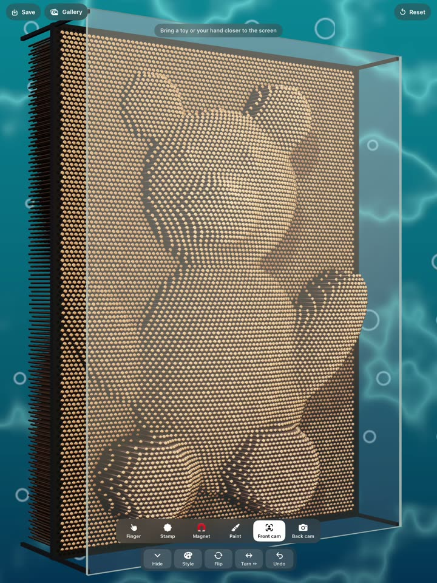
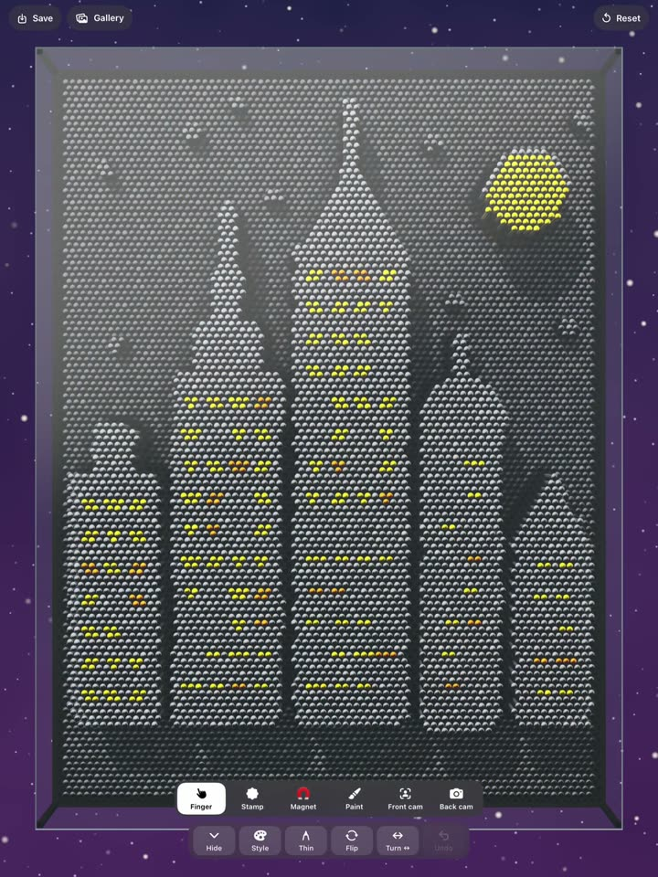
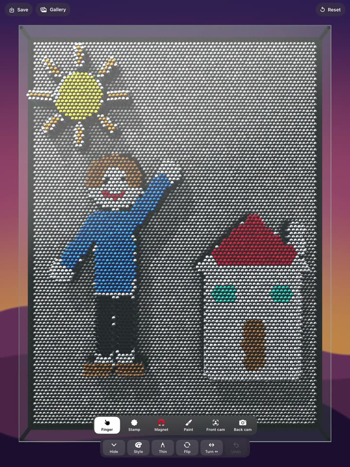
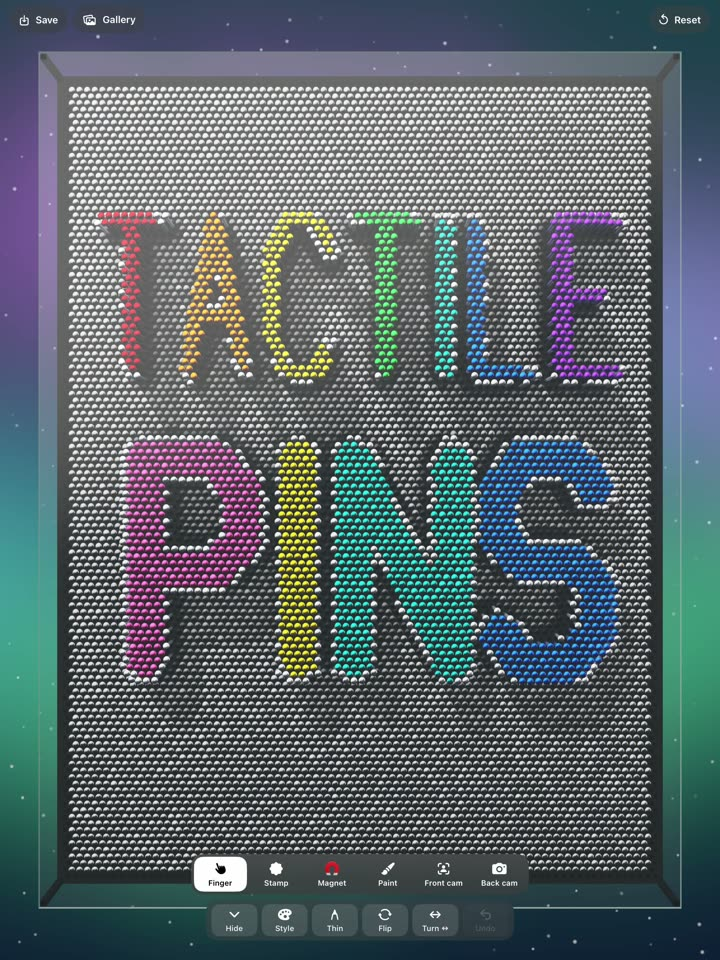

Thousands of pins.
Press anything into them.
Tactile Pins is a pin art toy for iPhone, iPad and Mac: a bed of sliding pins that keeps the shape of whatever is pushed into it. A finger, a whole hand, a stamp, or a face or a real toy held up to the camera. Every pin stops at its own depth, so what you make is 3D.
For iPhone, iPad and Mac · Free, with one purchase for the full set
- iPhone, iPad and Mac
- Apple Pencil
- No account, no internet
Every picture is made by the app itself, on a 13-inch iPad simulator; the drawing is sped up. A simulator has no camera, so a modelled head and teddy bear stand in for it. The music is our own.
A real toy, in 3D
The whole thing is modelled: the board, the corner posts, a slab of clear acrylic on the front, and every pin with its own weight and friction.
Press
One finger, a whole hand, or an Apple Pencil. The longer you hold, the deeper the pins go. Switch to a thin touch for detail.
Stamp
A box of solid shapes in three sizes: hearts, stars, animals, weather and more. Each leaves a clean outline with a rounded 3D shape inside.
Paint
Colour individual pins from either side. Twelve colours, one pin at a time or a whole patch.
Magnet
Pull pins toward you. Draw with raised pins from the front, or rub parts out from the back.
Camera
Point the camera at a toy and move closer: the nearer you get, the further its shape goes in. Front camera too, for a hand or a face.
Tumble
Turn it any way round and pinch to zoom. Gravity is real: tip it glass-up and every pin slides home.
Things a flat drawing can't do
Scan a face or a toy and turn it side-on to see its profile. Then pick the pins (metal, plastic or rainbow) and what is behind them: a plain studio, six moving scenes, or a photo of your own.






- Silver
- Gold
- Rose gold
- Copper
- Graphite
- Ten plastic colours
- Rainbow, rings, stripes and confetti
Keep it, or give it to someone
Save where every pin is, with a photo, and carry on with it later from the gallery.
To share one, turn it into a QR code. The creation itself is in the code (pins, paint and finish), so the other iPhone or iPad just scans it. No internet, no account.
The cameras measure depth on the device, with LiDAR or an on-device depth model. Nothing leaves it. No ads, no accounts, no tracking. Privacy policy
Free to play. One purchase for the full set.
The pins, the magnet, both cameras and Press in are all free, with a starter box of stamps, colours, pins and backgrounds.
One purchase opens the rest: every stamp, colour, pin finish and background, a photo of your own behind the pins, unlimited saves and sharing by code. It is yours for keeps, shared with your family through Family Sharing. No subscriptions, no ads.
Made in Seattle by Timothy Crosley. More apps, for kids and grown-ups, at pnw.kids. Questions? Visit support or email bugjugapp@gmail.com.